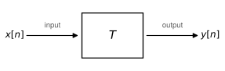

Linear systems and filtering

This audio equalizer from Apple iTunes is made possible by a collection of digital frequency-selective filters.
Filtering signals digitally
One of the main advantages of living in the computer/smartphone/wearable age is that digital processing power is widely available!
In the olden days, if we wanted to process information, we had to build a machine to accomplish a very specific task. The ability of the processing to adapt to the signal or task was very limited.


A mechanical clock contains a series of gears calibrated to tell time. What if we suddenly decided an hour was composed of 100 minutes instead of 60? We'd need a new clock! (Image credit: Jose Manuel/Wikipedia) A sextant is specifically constructed to measure angles between objects in the sky and the horizon.
Many of these devices are programmable, allowing us to process signals how we see fit.
So what is filtering?
A filter is a system that permits some information to pass through the system while suppressing other information.
What is a system?
A system performs a mathematical operation, or operations, on one or more input signals, to produce one or more output signals.
A digital filter processes a digital input signal to produce the desired digital output signal.
There are many kinds of digital filters. The equalizer shown earlier is one example. What is an equalizer?
Applications of filtering
The notion of filtering is not new to digital, however. It has shown up for a long time in many mundane places:
- Coffee filter
- Water purification
- Color filter on a camera (or even a stage light)
- Grain separation
- Chemical reactions
Let’s think how we use digital filters in our everyday lives:
- Clean up noise in the video and audio we watch and listen to
- One way to allow multiple cell phones to communicate at the same time
- How a GPS receiver identifies satellites
- How movies play smoothly on high-frame-rate TVs and computer monitors
What is being filtered in each of these examples?
- What is the input signal?
- What is the desired output signal?
- What is removed from the input signal? (Or, what is preserved in the output?)
Let’s talk about systems
A system (call it T) takes one or more inputs $x_1, x_2, \cdots,$ and produces one or more outputs $y_1, y_2, \cdots.$
Let’s constrain ourselves to one input and one output to start.
We will work with digital systems, but it is more convenient to study discrete-time (DT) systems with continuous-valued inputs $x[n]$ and outputs $y[n]$.
The following diagram describes such a system:

The distinction of working with discrete-valued digital signals is important, but makes analysis much more complicated.
Properties of systems
While a complete discussion of system properties is more appropriate for a later course, there are a couple of important properties that will make our study of filters much easier:
- Linearity
- Time invariance
We already saw linearity in another context: the spectrum of a signal.
Linearity of a system is the same principle: additivity and scaling.
For an input $x[n]$, the system $T$ produces the output
\[y[n] = T(x[n]).\]Then,
\[y_1[n] = T(x_1[n]), \quad y_2[n] = T(x_2[n])\]then additivity and scaling say
\[y_1[n] + y_2[n] = T(x_1[n] + x_2[n]), \qquad c\,y_1[n] = T(c\,x_1[n]),\]and the two together give
\[a\,y_1[n] + b\,y_2[n] = T(a\,x_1[n] + b\,x_2[n]).\]Linearity is a very powerful property that ensures systems are well-behaved:
- The system behaves the same no matter how the signal is scaled.
- Given an input composed of multiple signals, we can describe the output by processing those component signals individually.
Unfortunately, very little in the world is strictly linear:
- Quantization is fundamentally nonlinear, so digital processing is inherently nonlinear.
- Real systems have physical limits on the range of possible inputs and outputs. These limits cause saturating, nonlinear behavior.
Fortunately, real systems can be approximately linear over a useful range.
Which is linear/nonlinear?
- Amplifier
- EKG-based heart rate monitor
- Quantizer
- $T(x[n]) = (x[n])^2$
- $T(x[n]) = x[n] - x[n-1]$
- $T(x[n]) = 2$
Time Invariance
Time invariance is another simplifying property that some systems have: processing a time-shifted input produces the output, time-shifted by the same amount.
\[y[n] = T(x[n]) \rightarrow y[n-n_0] = T(x[n-n_0])\]Some examples:
- $T(x[n]) = x[n+1]$
- $T(x[n]) = \frac12(x[n] + x[n-1])$
- $T(x[n]) = (x[n])^2$
Let’s show the following are not time-invariant:
- $T(x[n]) = (-1)^n x[n]$
- $T(x[n]) = x[2n]$
Some real-world examples of time-invariant systems:
- The audio equalizer
- Noise-cancelling headphones
A real-world example that is not time-invariant: many systems behave differently as the environment changes, e.g., a car (road, fuel), sound system (humidity, temperature).
Linear, time invariant (LTI) systems
The class of systems that are both linear and time-invariant is a very important class in signal processing theory. While a detailed discussion of these systems will wait for a future course, the frequency representation of these systems is very powerful.
It allows us to describe a filter in terms of what it does to the spectrum of a signal.
Analog systems and filters
Most of the processing of signals is performed in the digital realm, but there are also analog systems and filters.
For example, a microphone, before the A-to-D converter, is an analog system:
- Input: sound waves, analog
- Output: voltage signal, analog
The principles are the same (although there are also significant differences), and the concepts are easier to understand and observe with analog systems. So we’ll focus on analog LTI systems for the rest of this part of the course. For an analog system, time invariance and linearity read
\[x( t ) \rightarrow y( t ) \Rightarrow x( t - T ) \rightarrow y(t - T),\] \[x_{1}( t ) \rightarrow y_{1}( t ),\ x_{2}( t ) \rightarrow y_{2}( t ) \Rightarrow ax_{1}( t ) + bx_{2}( t ) \rightarrow ay_{1}( t ) + by_{2}( t ).\]- $y( t ) = \dfrac{1}{2}x\left( t - \dfrac{1}{6} \right)$
- $y( t ) = x(3t)$
- $y( t ) = \dfrac{dx( t )}{dt}$
- $y( t ) = \dfrac{1}{2\pi}\dfrac{dx( t )}{dt} - \dfrac{1}{( 2\pi )^{2}}\dfrac{d^{2}x( t )}{dt^{2}}$
- $y( t ) = x( t )^{2} - x(t/2)$
In the next section we look at what these systems do to a single frequency, which turns out to be the whole story for the LTI ones.